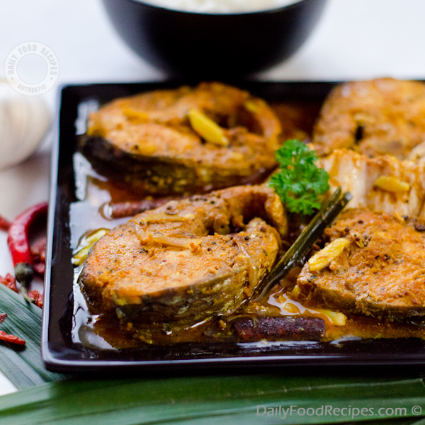

Curry Recipes

Sri Lankan baby Jack fruit Curry - Polos curry
"Wow! Wow!Sri Lankan Polos Curry Delight"
View Recipe


Sri Lankan Gotukola Salad - Gotukola Sambol
"Refreshing Green: Sri Lankan Gotukola Salad"
View Recipe
Sri Lankan Wambatu Salad - Batu Moju/Batu Pahiya
"Tangy Temptation: Sri Lankan Wambatu Moju"
View Recipe

Sri Lankan Lake Fish Curry - Waw malu curry
"Lake Bounty: Sri Lankan Waw Malu Curry"
View Recipe